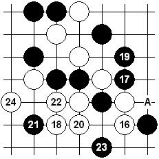

回顾日本名人战之中村登场
#1 回顾日本名人战之中村登场作者：有志青年 发表时间：2008-4-29 10:37:07
1975年11月19日，中村茂六段（当时）在神奈川县鹤卷温泉向矶部泰山名人发起挑战。由此，开启了日本连珠的新时代。本局选自第13期日本名人战第一局。
图一：当时的规则是白方指定黑方布局，后手方自然会选择一些白有利的开局。由于那时的研究认为长星白较有利，所以在高水平的比赛中很常见。本局中村的黑9少见，黑9-A是最强点。对于这步棋或许有两种考虑，一是这样可以避开对手熟悉的局面，二是中村应该对此手有所准备。
图二：实战白10、11的交换必然，12是局面的分歧点。12大致有三种常见选择，除了本图的12外，也有12-A或12-13位的下法。矶部名人的12强烈的一手！白棋在此处需要对全局的进程有充分的考量，否则一旦攻击不能得利，黑棋很容易获得优势。例如，黑棋的B点是绝好形（只是示意，非绝对选择。）对黑白来说都是将来要争夺的要点。
图三：实战白16问题手，甚至可以说是败招。17后局面逆转，中村的策略成功。此处有人提出16-A是强手，变化见图四。

图五：实战白18~22必败的下法，很难用误算来解释矶部名人这样交换的用意。黑25后的胜法对于段位棋手来说没任何难度，24如A，黑25-31的必胜也是显而易见的。如白18选择其他的防守，虽然不至于速败，但黑棋已经控制了局面，白棋前景暗淡。矶部泰山名人没有发挥实力的一局。
[文章来源：李洪斌博客]